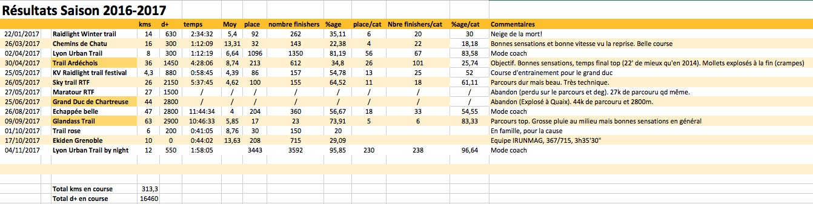

Semaine 12/02/18 au 18/02/18
- Lundi 12/02
- Mardi 13/02
- (Vélo) 30' HT dont 2x8x30/30
- Mercredi 14/02
- Jeudi 15/02
- (CAP) 6,2k/32' autour du Luxembourg (Paris)
- Vendredi 16/02
- (CAP) 6,3k/33' jardins du Luxembourg à jeun (Paris)
- Samedi 17/02
- (CAP) 7k/35'30, Essai chaussures Décathlon Long et Fast
- (CAP) 7,6k/1h15', 360 d+, Sortie trail dans la neige en partie de nuit. A/R l'Emeindras du dessous.
- Dimanche 18/02
- (CAP) sortie longue 15k/1h15'30. Bonne sensations au début et un peu cramé à la fin. Une bonne partie à 13 km/h.
Début de semaine pas top mais ok ensuite. Bonnes sensations en général quand même. Par contre pas de séance de VMA en
course (une en vélo en début de semaine).
Semaine 05/02/18 au 11/02/18
- Lundi 05/02
- Mardi 06/02
- Mercredi 07/02
- Jeudi 08/02
- Vendredi 09/02
- (CAP) 56'20/10,1k VMA 2x10x30/30 (3')
- Samedi 10/02
- Dimanche 11/02
- (CAP) 1h08'/13,6k, allure tempo sur le retour
Semaine un peu compliquée au travail. Petite semaine du coup.
Semaine 29/01/18 au 04/02/18
- Lundi 29/01
- Mardi 30/01
- (CAP) 59'30/10,7k 2x10x30/30 VMA (3')
- Mercredi 31/01
- Jeudi 01/02
- Vendredi 02/02
- (CAP) 56'24/8,85k AS Fontaine. Sensations pas top. 1x2'05/30" VMA
- Samedi 03/02
- Dimanche 04/02
- (CAP) 1h52'06/13,80 730 d+. Raidlight Winter Trail. 100e/260, 8e V2. Sensations ok. Bouse en descente. Pas trop arrivé à
m'arracher quand même.
Semaine meilleure que la précédente mais pas encore top.

Semaine 22/01/18 au 29/01/18
- Lundi 22/01
- Mardi 23/01
- Mercredi 24/01
- (CAP) VMA 2x6x2'05/30" sur les quais. Bonnes sensations à part les 3 derniers vraiment durs. 12,3k/1h06'
- Jeudi 25/01
- Vendredi 26/01
- Samedi 27/01
- Dimanche 28/01
Semaine pourrie au boulot.

Semaine 15/01/18 au 21/01/18
- Lundi 15/01
- Mardi 16/01
- Mercredi 17/01
- (CAP) VMA 8,4k/58', 2x10x30/30 (3'). Sur neige avec légère cote. Bonnes sensations malgré le froid. Cool.
- Jeudi 18/01
- (Nat) 1300m à 7h. Les sensations reviennent aussi en nat. Cool.
- (CAP) 8,4, 45', footing tranquille pour récupérer. Fatigué et jambes lourdingues.
- Vendredi 19/01
- (CAP) VMA 2x6x2'05/30 (3'). 13.4k/1h13' en tout. Séance dure mais sensations ok.
- Samedi 20/01
- (CAP) 25' footing échaufft pour PPG et récup VMA de la veille
- (PPG) 2x10x30/30 gainage/abdos/muscu
- Dimanche 21/01
- (CAP) 12.5k/1h04'50, Fatigué
Bonne semaine pleine avec les deux séances de VMA. Fatigué en fin de semaine mais normal. Bonnes sensations qd meme.

Semaine 08/01/18 au 14/01/18
- Lundi 08/01
- (CAP) 4k de nuit au Sappey, allure souple
- Mardi 09/01
- Mercredi 10/01
- (CAP)9,5k, 57'. Une série de 6x2'05/30" en cote au Sappey pour reprendre sérieux
- Jeudi 11/01
- Vendredi 12/01
- (CAP) Séance VMA avec Lucie sur piste. 2x10x30/30 (3'). (13k, 1h17) Sensations qui reviennent.
- Samedi 13/01
- Dimanche 14/01
- (CAP) 12k, 1h03' Endurance++. Bonnes sensations
Bon retour au sport. 39k en course et 2 séances VMA et une séance de nat tranquille.
Semaine 01/01/18 au 07/01/18
- Lundi 01/01
- Mardi 02/01
- Mercredi 03/01
- Jeudi 04/01
- Vendredi 05/01
- (CAP) Fontaine, 10k. 1 série de 6x2'05/30 allure de bouse. Baché
- Samedi 06/01
- Dimanche 07/01
- (Nat) 1,2k cool pour remonter la pente
Semaine à oublier.
Bilan 2017
283 sessions tous sports confondus, 350 heures, 63167m d+.
- 1209 kms en course à pied (121h, 10224m d+)
- 677 kms en trail (113h, 37530m d+)
- 185 kms en rando (54h, 9807m d+)
- 874 kms vélo (37h, 5606m d+)
- 32kms de natation (15h)

Semaine 25/12/17 au 31/12/17
- Lundi 25/12
- Mardi 26/12
- (CAP) 58'44/10,7k, 3x6x30/30 en nature le long de l'Isère. Sensations ok.
- Mercredi 27/12
- (Vélo) HT 30' dont 10x30/30 vélocité
- (PPG) 15'
- Jeudi 28/12
- Vendredi 29/12
- Samedi 30/12
- Dimanche 31/12
Semaine 18/12/17 au 25/12/17
- Lundi 18/12
- Mardi 19/12
- Mercredi 20/12
- Jeudi 21/12
- (CAP) 38'/6k. Coolos de nuit au Sappey.
- Vendredi 22/12
- (CAP) 53'/8k, séance Fontaine. 2x6x30/30. Sensations de daube. Laissé tombé la dernière série. Soupir.
- Samedi 23/12
- Dimanche 24/12
Semaine compliquée encore avec sensations de daube en fin de semaine. Ca va revenir.
Semaine 11/12/17 au 17/12/17
- Lundi 11/12
- Mardi 12/12
- (Vélo) 20' home-trainer bonne allure
- PPG 20'
- Mercredi 13/12
- Jeudi 14/12
- Vendredi 15/12
- (CAP) Séance piste. Echaufft + educ + 2x7x1'30/30 (3') + récup. Séance solide et pratiquement 400 à chaque
fois, 13,4k en tout. Pulses max atteintes presque sur chaque répet.
- Samedi 16/12
- (CAP) 31'/6k récup après séance de la veille
- Dimanche 17/12
- (Ski) Alpin au Sappey. Trop cool.
Semaine 4/12/17 au 10/12/17
- Lundi 4/12
- Mardi 5/12
- Mercredi 6/12
- Tests chaussures RaidLight 2019 et travail avec le concepteur. 5k dans terrain pourri (neige, boue).
- Jeudi 7/12
- Vendredi 8/12
- (CAP) séance AS Fontaine, 3x6x30/30. Bonnes sensations au final meme si naze avant et naze après. Max en pulses obtenu sur la
dernière série. 10k.
- Samedi 9/12
- (CAP) 4,5k en 30' dans la neige au Sappey. Un peu cuit mais cool quand même.
- Dimanche 10/12
Semaine bof encore (malgré la bonne séance le vendredi). Jetlag, boulot et conditions climatiques.
Semaine 27/11/17 au 03/12/17 (Hawaii)
- Lundi 27/11
- Mardi 28/11
- 20' PPG
- (CAP) 8k tempo, fatigué
- Mercredi 29/11
- Jeudi 30/11
- Vendredi 01/11
- Samedi 02/11
- (CAP) Séance VMA, 18' Echaufft, 2x7x1'30/30" ((3'), 10' Récup. 10k, 55'. Bonnes sensations
- Dimanche 03/11
Semaine bof avec temps pourri et pas beaucoup de temps pour l'entrainement. J'ai pu qd même sauver la séance et VMA avec des bonnes
sensations.
Semaine 20/11/17 au 29/11/17 (Hawaii)
- Lundi 20/11
- Rien, récup + vol vers Honolulu
- Mardi 21/11
- (CAP) 6k trail, 44', 311 m d+
- Mercredi 22/11
- Jeudi 23/11
- Vendredi 24/11
- (CAP) 11,6k/1h07', VMA 3x6x30/30
- Samedi 25/11
- Dimanche 26/11
Semaine ok à Hawaii mais temps pas top (beaucoup de pluie) et obligé de prendre la voiture pour aller courir.
Semaine 13/11/17 au 19/11/17 (Denver)
- Lundi 13/11
- Mardi 14/11
- Mercredi 15/11
- (CAP) 42'28/8k à jeun. Bonnes sensations
- Jeudi 16/11
- Vendredi 17/11
- (CAP) Rando/course 15k avec 800m d+ 3h13, tranquille.
- Samedi 18/11
- (Nat) 2000m
- (CAP) 48'/9k assez facile
- Dimanche 19/11
Semaine un peu compliquée à organiser pour les entrainements mais au final pas mal qd meme (7h41' d'entrainement, 47k à pied, 2
en nat. Le tout entre 1700m et 2000m). Sensations meilleures au court de la semaine.
Semaine 6/11/17 au 12/11/17
- Lundi 6/11
- Rien (temps pourri, boulot)
- Mardi 7/11
- (CAP) 54'/10k, bonne allure (avec Byron). Froid.
- Osthéo
- Mercredi 8/11
- Jeudi 9/11
- Vendredi 10/11
- (CAP) VMA, 30' échauffement, Ed, 3x6x(30/30), 10' retour au calme. Bonnes sensations
- Samedi 11/11
- Dimanche 12/11
- (CAP) Run bon rythme autour du Boulder Reservoir. Bien fatigué qd meme. Pas insisté du coup
- (CAP) Footing 45' en fin d'après-midi. 16 kms en tt pour la journée
Sensations ok cette semaine. Bien sur le fractionné du vendredi. Naze à Denver/Boulder (mais on est à 1800m + voyage). 37k,
3h26' CAP. Semaine light avant départ aux US + osthéo.
Semaine 30/10/17 au 05/11/17
- Lundi 30/10
- Mardi 31/10
- (Nat) 1,5k plutot tech, bonnes sensations (ca revient!)
- Mercredi 01/11
- (CAP) 1h05' Fartlek. 6x (une cote dure + chaise) + une cote plus longue sur la fin
- (Rando) 3h facile (Ecoutoux)
- Jeudi 02/11
- Vendredi 03/11
- (CAP) Test VMA Stade. 1h05' en tt. Monté à 16,5 (Pulses max 167)
- PPG + stretch
- Samedi 04/11
- (CAP) Lyon Urban Trail by Night en mode accompagnant. 12k en 1h58', 600 d+
- Dimanche 05/11
- (CAP) 42' bon rythme dans le Sappey.
Semaine plutot light sans velo et une seule natation. 8h50 malgré tout (1,5k en nat, 0 vélo, 46 à pied). Inscription pour le
trail des 3 pucelles (29 avril) sur le 23 kms.
Semaine 23/10/17 au 29/10/17
- Lundi 23/10
- Mardi 24/10
- (CAP) 30' footing tranquille
- Mercredi 25/10
- (Vélo) 2x14k vélo taf tranquille
- (Vélo) 40k vélocité
- Jeudi 26/10
- (Vélo) 20k vélo taf tranquille
- (CAP) 48' footing assez tranquille
- Vendredi 27/10
- (CAP) 35' footing tranquille (dont une petite cote pour le fun). :-)
- (CAP) stade, échauft + 2x8x45/30 + Récup. Bonnes sensations. Plus rapide sur les récup entre les 45 et les 30
- PPG + stretch
- Samedi 28/10
- Dimanche 29/10
- (CAP) 1h end + tempo. Bonnes sensations
Bonnes sensations cette semaine. 9h08' d'entrainement (3k nat, 87k vélo, 40k cap).
Last modified: Sun Feb 18 20:51:33 CET 2018